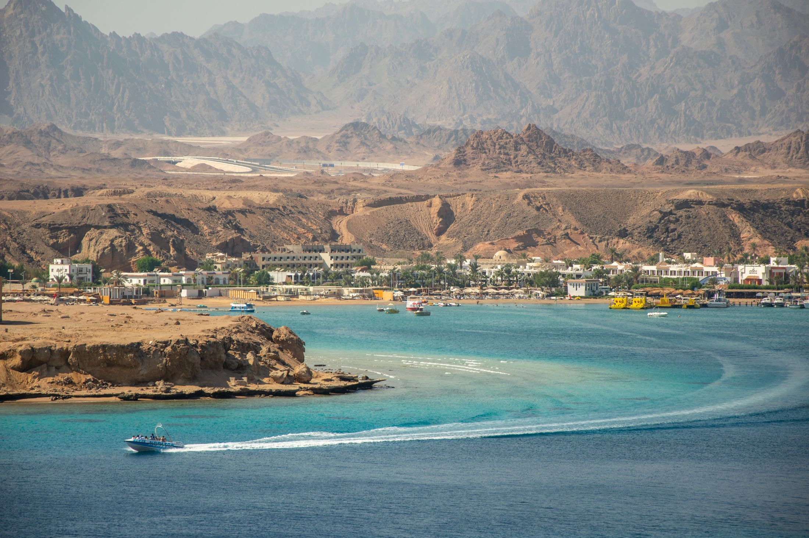
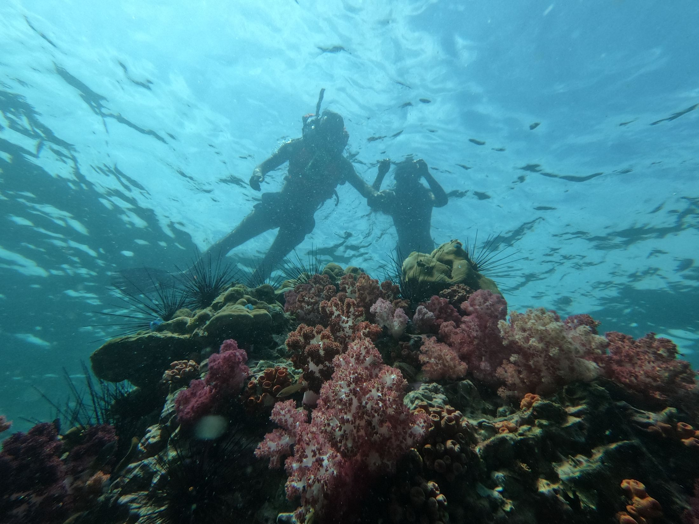
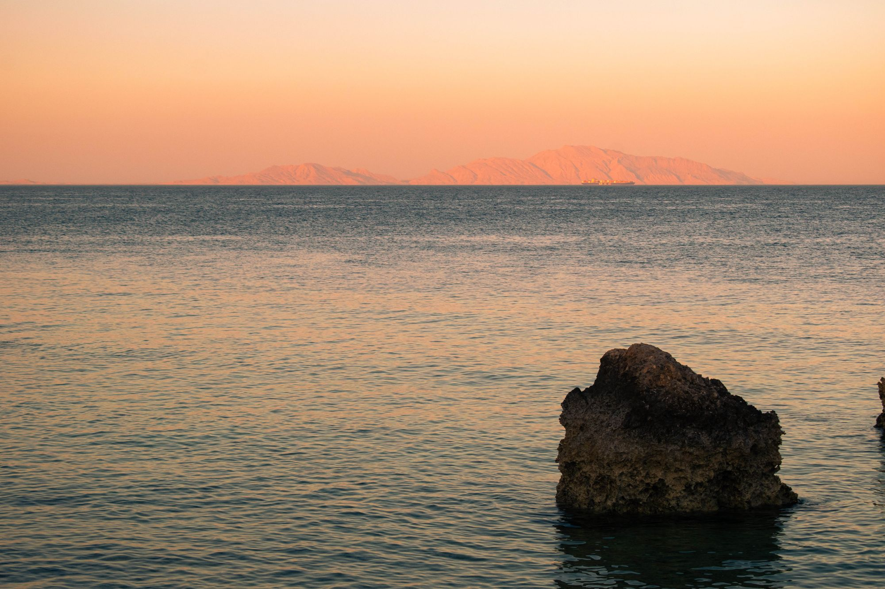

Rødehavet og fællesskabet
Når kurset slutter, begynder resten.
Du rejser ud for at lære. Men det er lyset, stilheden og livet på revet, der følger med hjem.
Stedet
Tæt på vandet. Langt fra tempoet.
Konceptet tager udgangspunkt i et mindre dykkerresort ved Rødehavet. Værdien er den direkte adgang til havet og oplevelsen af at have tid nok.

Under overfladen
Et andet tempo findes.
Du ser lyset bevæge sig, hører din egen vejrtrækning og opdager detaljer, der ville forsvinde på land.
Dybden standser tiden.

Efter dykket
Fællesskab uden program.
I lærer sammen og vender tilbage til det samme sted efter dagens dyk. Samtalerne opstår af sig selv, fordi I har oplevet noget sammen.
Rejs alene eller sammen.
Du kan komme alene, med en partner eller med en ven. I behøver ikke være lige modige fra begyndelsen; forløbet giver plads til fælles oplevelser og individuelle grænser.
Se om rejsen passer til jer